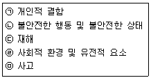
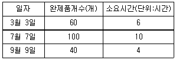

인간공학기사 (2016-03-06 기출문제)
1과목: 인간공학개론
1. 사용성에 대한 설명으로 틀린 것은?(오류 신고가 접수된 문제입니다. 반드시 정답과 해설을 확인하시기 바랍니다.)
- 실험 평가로 사용성을 검증할 수 있다.
- 편리하게 제품을 사용하도록 하는 원칙이다.
- 사용성은 반드시 전문가가 평가하여야 한다.
- 학습성, 에러방지, 효율성, 만족도 등의 원칙이 있다.
(정답률: 89%)

2. 정보이론의 응용과 거리가 먼 것은?
- 다중가업
- Hick - Hyman 법칙
- Magic number = 7 ± 2
- 자극의 수에 따른 반응시간 설정
(정답률: 77%)
3. 인간 기억 체계에 대한 설명 중 틀린 것은?
- 단위시간당 영구 보관할 수 있는 정보량은 7bit/sec 이다.
- 감각 저장(sensory storage)에서는 정보에 코드화가 이루어지지 않는다.
- 장기 기억(long-term memory)내의 정보는 의미적으로 코드화된 정보이다.
- 작업 기억(working memory)은 현재 또는 최근의 정보를 장기간 기억하기 위한 저장소의 역할을 한다.
(정답률: 79%)
4. 정보의 전달량에 관한 공식으로 맞는 것은?
- Noise=H(X)-T(X, Y)
- Noise=H(X)+T(X, Y)
- Equivocation=H(X)+T(X, Y)
- Equivocation=H(X)-T(X, Y)
(정답률: 57%)
5. 신호검출의 민감도를 늘리는 방법이 아닌 것은?
- 교육 훈련
- 결과의 피드백
- 신호검출 실패 비용의 증가
- 신호의 비신호의 구별성 증가
(정답률: 86%)
6. 병렬 시스템의 특성에 관한 설명으로 틀린 것은?
- 요소의 중복도가 늘수록 시스템의 수명은 짧아진다.
- 요소의 개수가 증가될수록 시스템 고장의 기회는 감소된다.
- 요소 중 어느 하나가 정상이면 시스템은 정상으로 작동된다.
- 시스템의 수명은 요소 중 수명이 가장 긴 것에 의하여 결정된다.
(정답률: 84%)
7. 인간의 눈이 완전 암조응(암순응) 되기까지 소요되는 시간은 어느 정도인가?
- 1~3분
- 10~20분
- 30~40분
- 60~90분
(정답률: 86%)
8. 회전운동을 하는 조종장치의 레버를 20° 움직였을 때 표시장치의 커서는 2cm 이동하였다. 레버의 길이가 15cm일 때 이 조종장치의 C/R비는 약 얼마인가?
- 2.62
- 5.24
- 8.33
- 10.48
(정답률: 66%)
9. 피험자간 설계(between subject design)에 대한 설명 중 틀린 것은?(오류 신고가 접수된 문제입니다. 반드시 정답과 해설을 확인하시기 바랍니다.)
- 피험자간 설계는 독립변인의 다른 수준들이 서로 다른 피험자 집단을 사용하여 평가하는 것을 뜻한다.
- 피험자간 설계는 피험자내 설계보다 실험조건들 사이의 통계적 유의미한 차이를 더 쉽고 더 민감하게 찾을 수 있다.
- 자동차 운전 훈련에서 시뮬레이터를 사용하는 경우와 실제 자동차를 사용하는 경우의 효과를 비교하려고 한다면, 피험자간 설계가 필요하다.
- 교통이 혼잡한 지역에서 휴대폰을 사용한 피험자 집단과 교통 소통이 원활한 지역에서 휴대폰을 사용하는 또 다른 피험자 집단으로 구분하여 실험하는 것을 피험자간 설계라 한다.
(정답률: 50%)
10. 1000Hz, 80dB인 음을 phon과 sone으로 환산한 것은?
- 40phon, 4sone
- 60phon, 3sone
- 80phon, 2sone
- 80phon, 16sone
(정답률: 72%)
11. 작업 공간 설계에 관한 설명으로 맞는 것은?
- 서서하는 작업에서 작업대의 높이는 최소치 설계를 기본으로 한다.
- 작업 표준 영역은 어깨를 중심으로 팔을 뻗어 닿을 수 있는 영역이다.
- 서서하는 힘든 작업을 위한 작업대는 세밀한 작업보다 높게 설계한다.
- 일반적으로 앉아서 하는 작업의 작업대 높이는 팔꿈치 높이가 적당하다.
(정답률: 67%)
12. 통화 이해도 측정을 위한 척도로 사용되지 않는 것은?
- 명료도 지수
- 통화 간섭 수준
- 이해도 점수
- 인식 소음 수준
(정답률: 74%)
13. 인체 측정 방법에 대한 설명으로 틀린 것은?
- 둥근 수평자(spreading caliper)는 가슴둘레를 측정할 때 사용한다.
- 수직자(anthropometer)는 키와 앉은 키를 측정할 때 사용한다.
- 직접적인 인체 측정 방법은 주로 마틴(Matin)식 인체 측정기를 사용하여 치수를 측정한다.
- 실루에트(silhouette)법은 자동 촬영 장치를 사용하여 피측정자의 정면사진 및 측면사진을 촬영하고, 이 사진을 이용하여 인체 치수를 실치수로 환산한다.
(정답률: 71%)
14. 인간공학에 대한 설명으로 적절하지 않은 것은?
- 자신을 모형으로 사물을 설계에 반영한다.
- 사용 편의성, 증대, 오류 감소, 생산성 향상에 목적이 있다.
- 인간과 사물의 설계가 인간에게 미치는 영향에 중점을 둔다.
- 인간의 행동, 능력, 한계, 특성에 관한 정보를 발견하고자 하는 것이다.
(정답률: 71%)
15. 피부의 감각기 중 감수성이 제일 높은 감각기는?
- 온각
- 통각
- 압각
- 냉각
(정답률: 84%)
16. 인간-기계 통합체계의 유형으로 볼 수 없는 것은?
- 수동 시스템
- 자동화 시스템
- 정보 시스템
- 기계화 시스템
(정답률: 75%)
17. 종이의 반사율이 70%이고, 인쇄된 글자의 반사율이 15%일 경우 대비(contrast)는?
- 15%
- 21%
- 70%
- 79%
(정답률: 67%)
18. 주의 (Attention)중 디스플레이 상의 다중정보를 병렬 처리하는 것이 가능하게 하는 것은?
- 분산주의(Divided Attention)
- 초점주의(Focused Attention)
- 선택주의(Selective Attention)
- 개별주의(Individual Attention)
(정답률: 83%)
19. 전력계와 같이 수치를 정확히 읽고자 할 때 가장 적합한 표시장치는?
- 동침형 표시장치
- 계수형 표시장치
- 동목형 표시장치
- 수직형 표시장치
(정답률: 84%)
20. 전철이나 버스의 손잡이 설치 높이를 결정하는데 적용하는 인체치수 적용원리는?
- 평균치 원리
- 최소치 원리
- 최대치 원리
- 조절식 원리
(정답률: 79%)
2과목: 작업생리학
21. 근육원섬유마디(sercomere)에서 근섬유가 수축하면 짧아지는 부분은?
- A 밴드
- 액틴(Actin)
- 미오신(Myosin)
- Z선과 Z선 사이의 거리
(정답률: 78%)
22. 어떤 작업자가 팔꿈치 관절에서부터 32cm 거리에 있는 8kg 중량의 물체를 한 손으로 잡고 있다. 팔꿈치 관절의 회전 중심에서 손까지의 중력중심 거리는 16cm이며 이 부분의 중량은 12N이다. 이 때 팔꿈치에 걸리는 반작용의 힘(N)은 약 얼마인가?
- 38.2
- 90.4
- 98.9
- 114.3
(정답률: 49%)
23. 습구온도가 43℃, 건구온도가 32℃일 때, Oxford 지수는 얼마인가?
- 38.50℃
- 38.15℃
- 41.35℃
- 41.53℃
(정답률: 61%)
24. 산업안전보건법령에서 정한 소음작업이란 1일 8시간 작업을 기준으로 얼마 이상의 소음이 발생하는 작업을 의미하는가?
- 80dB(A)
- 85dB(A)
- 90dB(A)
- 100dB(A)
(정답률: 81%)
25. 진동과 관련된 단위가 아닌 것은?
- nm
- gal
- cm/s
- sone
(정답률: 85%)
26. 조도(llluminance)의 단위는?
- nit
- lumen
- lux
- candela
(정답률: 86%)
27. 힘든 작업을 수행할 때가 휴식을 취하고 있을 때보다 혈류량이 더 감소하는 기관이 아닌 것은?
- 간
- 신장
- 뇌
- 소화기계
(정답률: 65%)
28. 뇌파의 종류 중 알파(α)파에 관한 설명으로 맞는 것은?
- 빠르고 진폭이 크다.
- 수면초기에 발생한다.
- 물질대사가 저하할 때 발생한다.
- 출현율이 작을수록 각성상태가 증가되는 경향이 있다.
(정답률: 40%)
29. 근육의 대사에 관한 설명으로 틀린 것은?
- 산소소비량을 측정하면 에너지소비량을 측정할 수 있다.
- 신체활동 수준이 아주 작은 작업의 경우에 젖산이 축적된다.
- 근육의 대사는 음식물을 기계적인 에너지와 열로 전환하는 과정이다.
- 탄수화물은 근육의 기본 에너지원으로서 주로 간에서 포도당으로 전환된다.
(정답률: 85%)
30. 작업생리학 분야에서 신체활동의 부하를 측정하는 생리적 반응치가 아닌 것은?
- 심박수(heart rate)
- 혈류량(blood flow)
- 폐활량(lung capacity)
- 산소소비량(oxygen consumption)
(정답률: 76%)
31. 심방수축 직전에 발생하는 파장(wave)은?
- P파
- Q파
- R파
- S파
(정답률: 74%)
32. 실내의 면에서 추천반사율이 가장 높은 곳은?
- 벽
- 바닥
- 가구
- 천장
(정답률: 93%)
33. 신체부위의 동작 중 전완의 회전운동에 쓰이며, 손바닥을 위로 향하도록 하는 회전을 무엇이라 하는가?
- 굴곡(flexion)
- 회내(pronation)
- 외전(abduction)
- 회외(supination)
(정답률: 64%)
34. 소음에 대한 청력손실이 가장 크게 나타나는 진동수는?
- 1000 Hz
- 2000 Hz
- 4000 Hz
- 20000 Hz
(정답률: 91%)
35. 일반적으로 최대근력이 50% 정도의 힘으로 유지할 수 있는 시간은?
- 1분 정도
- 5분 정도
- 10분 정도
- 15분 정도
(정답률: 68%)
36. 동일한 관절운동을 일으키는 주동근(agonist)과 반대되는 작용을 하는 근육은?
- 고정근(stabilizer)
- 중화근(neutralizer)
- 길항근(antagonists)
- 보조 주동근(assistant mover)
(정답률: 85%)
37. 교대작업에 관한 설명으로 맞는 것은?
- 교대작업은 야간→저녁→주간 순으로 하는 것이 좋다.
- 교대일정은 정기적이고, 근로자가 예측 가능하도록 해야 한다.
- 신체의 적응을 위하여 야간근무는 7일 정도로 지속되어야 한다.
- 야간 교대시간은 가급적 자정이후로 하고, 아침 교대시간은 오전 5~6시 이전에 하는 것이 좋다.
(정답률: 86%)
38. 에너지 대사율(RMR)에 관한 계산식으로 맞는 것은?
- RMR=작업대사량/기초대사량
- RMR=기초대사량/작업대사량
- RMR=(한 일/에너지 소비)×100(%)
- RMR=안정시 에너지대사량/기초대사량
(정답률: 79%)
39. 최대산소소비능력(MAP)에 관한 설명으로 틀린 것은?
- 산소섭취량이 지속적으로 증가하는 수준을 말한다.
- 사춘기 이후 여성의 MAP는 남성이 65~75% 정도이다.
- 최대산소소비능력은 개인의 운동역량을 평가하는데 활용된다.
- MAP를 츨정하기 위해서 주로 트레드밀(treadmill)이나 자전거 에르고미터(ergometer)를 활용한다.
(정답률: 74%)
40. 운동이 가장 자유롭고 다축성으로 이루어진 관절은?
- 견관절
- 추간관절
- 슬관절
- 요골수근관절
(정답률: 68%)
3과목: 산업심리학 및 관계법규
41. 라인리히(H.W. Heinrich)의 재해예방의 원리 5단계를 올바르게 나열한 것은?
- 조직→평가분석→사실의 발견→시정책의 선정→시정책의 적용
- 조직→사실의 발견→평가분석→시정책의 선정→시정책의 적용
- 평가분석→사실의 발견→조직→시정책의 선정→시정책의 적용
- 평가분석→조직→사실의 발견→시정책의 선정→시정책의 적용
(정답률: 83%)
42. 집단의 특성에 관한 설명과 가장 거리가 먼 것은?
- 집단은 사회적으로 상호 작용하는 둘 혹은 그 이상의 사람으로 구성된다.
- 집단은 구성원들 사이 일정한 수준의 안정적인 관계가 있어야 한다.
- 구성원들이 스스로를 집단의 일원으로 인식해야 집단이라고 칭할 수 있다.
- 집단은 개인의 목표를 달성하고, 각자의 이해와 목표를 추구하기 위해 형성된다.
(정답률: 83%)
43. 데이비스(K.Davis)의 동기부여 이론에 대한 설명으로 틀린 것은?
- 능력=지식×노력
- 동기유발=상황×태도
- 인간의 성과=능력×동기유발
- 경영의 성과=인간의 성과×물질의 성과
(정답률: 65%)
44. 재해율에 관한 설명으로 맞는 것은?
- 도수율은 연간 총 근로시간 합계에 10만 시간당 재해 발생 건수이다.
- 강도율은 근로자 1000명당 1년 동안에 발생하는 재해자수(사상자 수)를 나타낸다.
- 우리나라 산업재해율은 1년 동안에 4일 이상 요양을 당한 근로자 수를 백분율로 나타낸 것이다.
- 연천인율은 연간 총 근로시간에 1000 시간당 재해 발생에 의해 잃어버린 근로손실일수를 의미한다.
(정답률: 54%)
45. 제조물 책임법에서 손해배상 책임에 대한 설명 중 틀린 것은?
- 물질적 손해뿐 아니라 정신적 손해도 손해배상 대상에 포함된다.
- 피해자가 손해배상 청구를 위해서는 제조자의 고의 또는 과실을 입증해야 한다.
- 제조자가 결함 제조물로 인하여 생명, 신체 또는 재산상의 손해를 입은 자에게 손해를 배상할 책임을 말한다.
- 당해 제조물 결함에 의해 발생한 손해가 그 제조물 자체에만 그치는 경우에는 제조물 책임대상에서 제외한다.
(정답률: 78%)
46. 어느 검사자가 한 로트에 1000개의 부품을 검사하면서 100개의 불량품을 발견하였다. 하지만 이 로트에는 실제 200개의 불량품이 있었다면, 동일한 로트 2개에서 휴면에러를 범하지 않을 확률은 얼마인가?
- 0.01
- 0.1
- 0.5
- 0.81
(정답률: 49%)
47. 작업에 수반되는 피로를 줄이기 위한 대책으로 적절하지 않은 것은?
- 작업부하의 경감
- 작업속도의 조절
- 동적 동작의 제거
- 작업 및 휴식시간의 조절
(정답률: 81%)
48. 다음의 각 단계를 하인리의 재해발생이론(도미노 이론)에 적합하도록 나열한 것은?

- ㉠→㉣→㉡→㉢→㉤
- ㉣→㉠→㉡→㉤→㉢
- ㉣→㉡→㉠→㉢→㉤
- ㉤→㉠→㉣→㉡→㉢
(정답률: 74%)
49. 관리 그리드 모형(management grid model)에서 제시한 리더십의 유형에 대한 설명으로 틀린 것은?
- (9, 1)형은 인간에 대한 관심은 높으나 과업에 대한 관심은 낮은 인기형이다.
- (1, 1)형은 과업과 인간관계 유지 모두에 관심을 갖지 않는 무관심형이다.
- (9, 9)형은 과업과 인간관계 유지의 모두에 관심이 높은 이상형으로서 팀형이다.
- (5, 5)형은 과업과 인간관계 유지에 모두 적당한 정보의 관심을 갖는 중도형이다.
(정답률: 88%)
50. 산업재해조사에 관한 설명으로 맞는 것은?
- 재해 조사의 목적은 인적, 물적 피해 상황을 알아내고 사고의 책임자를 밝히는데 있다.
- 재해 발생시 제일 먼저 조치해야 할 사항은 직접원인, 간접 원인 등 재해 원인을 조사하는 것이다.
- 3개월 이상의 요양이 필요한 부상자가 2인이상 발생했을 때 중대재해로 분류한 후 피해자의 상병의 정도를 중상해로 기록한다.
- 사업주는 사망자가 발생했을 때에는 재해가 발생한 날로부터 10일 이내에 산업재해 조사표를 작성하여 관할 지방노동관서의 장에게 제출해야한다.
(정답률: 79%)
51. 인간오류(human error)의 분류에서 필요한 행위를 실행하지 않은 오류는 무엇인가?
- 시간오류(timing error)
- 순서오류(sequence error)
- 직위오류(commission error)
- 부작위오류(error of moission)
(정답률: 67%)
52. 레윈(Lewin)의 인간행동 법칙 “B=f (PㆍE)"의 각 인자와 리더십의 관계를 설명한 것으로 적절하지 않은 것은?
- f는 리더십의 형태이다.
- P는 집단을 구성하는 구성원의 특징이다.
- B는 리더십 발휘에 따른 집단의 활동을 의미한다.
- E는 집단의 과제, 구조, 사회적 요인 등 환경적 요인이다.
(정답률: 74%)
53. 10명으로 구성된 집단에서 소시오메트리(sociometry) 연구를 사용하여 조사한 결과 긍정적인 상호작용을 맺고 있는 것이 16쌍일 때 이 집단의 응집성지수는 약 얼마인가?
- 0.222
- 0.356
- 0.401
- 0.504
(정답률: 68%)
54. 스트레스를 받을 때 몸에서 생성되는 호르몬으로 스트레스 정도를 파악하는데 사용되는 것은?
- 코티졸
- 환경호르몬
- 인슐린
- 스테로이드
(정답률: 83%)
55. 조직의 지도자들이 부하직원들을 승진시킬 수 있고 봉급을 인상해 주는 등의 능력이 있으므로 통제가 가능한 권한은?
- 합법적 권한
- 위임적 권한
- 강압적 권한
- 보상적 권한
(정답률: 84%)
56. 휴먼에러 예방대책 중 인적요인에 대한 대책이 아닌 것은?
- 소집단 활동
- 작업의 모의훈련
- 안전 분위기 조성
- 작업에 관한 교육훈련
(정답률: 62%)
57. 모든 입력이 동시에 발생해야만 출력이 발생되는 논리조작을 아타내는 FT도의 논리기호 명칭은?
- 기본사상
- OR게이트
- 부정게이트
- AND게이트
(정답률: 89%)
58. 주의의 특성을 설명한 것으로 가장 거리가 먼 것은?
- 고도의 주의는 장시간 지속할 수 없다.
- 한 지점에 주의를 하면 다른 곳의 주의는 약해진다.
- 동시에 시각적 자극과 청각적 자극에 주의를 집중할 수 없다.
- 사람은 한 번에 여러 종류의 자극을 지각하거나 수용하는데 한계가 있다.
(정답률: 88%)
59. 반응시간에 관한 설명으로 맞는 것은?
- 자극이 요구하는 반응을 행하는데 걸리는 시간을 말한다.
- 반응해야 할 신호가 발생한 때부터 반응이 종료될 때까지의 시간을 말한다.
- 단순반응시간에 영향을 미치는 변수로는 자극 양식, 자극의 특성, 자극 위치, 연령 등이 있다.
- 여러개의 자극을 제시하고, 각각에 대한 서로 다른 반응을 할 과제를 준 후에 자극이 제시되어 반응할 때까지의 시간을 단순반응시간이라 한다.
(정답률: 63%)
60. NIOSH의 직무 스트레스 평가모델에서 직무 스트레스요인과 급성반응 사이의 중재요인에 해당되지 않는 것은?
- 완충요소
- 조직적 요소
- 비직업적 요소
- 개인적 요소
(정답률: 31%)
4과목: 근골격계질환 예방을 위한 작업관리
61. OWAS(Ovako Working Posture Analysis System)에 관한 설명으로 틀린 것은?
- OWAS 활동점수표는 4단계의 조치단계로 분류된다.
- OWAS는 작업자세로 인한 작업부하를 평가하는데 초점이 맞추어져 있다.
- OWAS는 신체 부위의 자세뿐만 아니라 중량물의 사용도 고려하여 평가한다.
- OWAS는 작업자세를 허리, 팔, 손목으로 구분하여 각 부위의 자세를 코드로 표현한다.
(정답률: 75%)
62. 워크샘플링 조사에서 초기 idle rate가 0.06이라면, 95% 신뢰도를 위한 워크샘플링 회수는 몇 회인가?
- 151
- 936
- 3162
- 3754
(정답률: 32%)
63. 근골격계 질환의 유형에 대한 설명으로 틀린 것은?
- 외상 과염은 팔꿈치 부위의 인대에 염증이 생김으로써 발생하는 증상이다.
- 백색수지증은 손가락에 혈액의 원활한 공급이 이루어지지 않을 경우에 발생하는 증상이다.
- 수근관 증후군은 손목이 꺽인 상태나 과도한 힘을 준 상태에서 반복적 손 운동을 할 때 발생한다.
- 결정종은 반복, 구부림, 진동 등에 의하여 건의 섬유질이 손상되거나 찢어지는 등의 건에 염증이 생기는 질환이다.
(정답률: 77%)
64. 중량물 들기 작업방법에 대한 설명 중 틀린 것은?
- 허리를 구부려서 작업을 수행한다.
- 가능하면 중량물을 양손으로 잡는다.
- 중량물 밑을 잡고 앞으로 운반하도록 한다.
- 손가락만으로 잡지 말고 손전체로 잡아서 작업한다.
(정답률: 89%)
65. 작업대의 개선으로 맞는 것은?
- 좌식작업대의 높이는 동작이 큰 작업에는 팔꿈치의 높이보다 약간 높게 설계한다.
- 입식작업대의 높이는 경작업의 경우 팔꿈치의 높이보다 5~10cm 정도 낮게 설계한다.
- 입식작업대의 높이는 중작업의 경우 팔꿈치의 높이보다 10~20cm 정도 낮게 설계한다.
- 입식작업대의 높이는 정밀작업의 경우 팔꿈치의 높이보다 5~10cm 정도 낮게 설계한다.
(정답률: 69%)
66. 작업구분을 큰 것에서부터 작은 순으로 나열한 것은?
- 공정→단위작업→요소작업→단위동작→서어블릭
- 공정→요소작업→단위작업→서어블릭→단위동작
- 공정→단위작업→단위동작→요소작업→서어블릭
- 공정→단위작업→요소작업→서어블릭→단위동작
(정답률: 80%)
67. 여러개의 스패너 중 1개를 선택하여 고르는 것을 의미하는 서블릭 기호는?
- H
- P
- ST
- PP
(정답률: 71%)
68. 준비시간을 단축하는 방법에 대한 설명 중 맞는 것은?
- 외준비 작업은 표준화하기 어렵다.
- 내준비 작업보다는 외준비 작업을 먼저 개선한다.
- 기계를 멈추어야만 할 수 있는 작업이 외준비 작업이다.
- 작업이 개선되어도 표준작업조합표는 그대로 유지한다.
(정답률: 74%)
69. WF(Work Factor)법의 표준 요소가 아닌 것은?
- 쥐기(Grasp, Gr)
- 결정(Decide, Dc)
- 조립(Assemble, Asy)
- 정신과정(Mental Process, MP)
(정답률: 52%)
70. 산업안전보건법령에 따라 사업주가 근골격계 부담작업 종사자에게 반드시 주지시켜야 하는 내용과 거리가 먼 것은?
- 근골격계부담작업의 유해요인
- 근골격계질환의 요양 및 부상
- 근골격계질환의 징후 및 증상
- 근골격계질환의 발생시 대처요령
(정답률: 84%)
71. 근골격계질환 예방관리 프로그램의 기본원칙에 속하지 않는 것은?
- 인식의 원칙
- 시스템 접근의 원칙
- 사업장내 자율적 해결원칙
- 일시적인 문제 해결의 원칙
(정답률: 79%)
72. 근골격계 질환의 주요 사회심리적 요인인 것은?
- 작업습관
- 접촉 스트레스
- 직무스트레스
- 부적절한 자세
(정답률: 77%)
73. 다중활동분석표의 사용 목적으로 적절하지 않은 것은?
- 조작업의 작업 현황 파악
- 수작업을 기본적인 동작요소로 분류
- 기계 혹은 작업자의 유휴 시간 단축
- 한 명의 작업자가 담당할 수 있는 기계 대수의 선정
(정답률: 48%)
74. 다음 중 중립자세가 아닌 것은?
- 어깨가 이완된 상태
- 고개가 직립인 상태
- 팔꿈치가 45°를 이루고 있는 상태
- 손목이 일직선(180°)으로 펴진 상태
(정답률: 79%)
75. 문제분석도구에 관한 설명으로 틀린 것은?
- 파레토 차트(Pareto chart)는 문제의 인자를 파악하고 그것들이 차지하는 비율을 누적분포의 형태로 표현한다.
- 간트 차트(Gant chart)는 여러 가지 활동 계획의 시작시간과 예측 완료시간을 병행하여 시간축에 표시하는 도표이다.
- PERT(Program Revolution and Review Technique)는 어떤 결과의 원인을 역으로 추적해 나가는 방식의 분석 도구이다.
- 특성요인도는 바람직하지 못한 사건이나 문제의 결과를 물고기의 머리로 표현하고 그 결과를 초래하는 원인을 인간, 기계, 방법, 자재, 환경 등의 종류로 구분하여 표시한다.
(정답률: 60%)
76. A 제품을 생산한 과거자료가 표와 같을 때 실적자료법에 의한 1개당 표준시간은 얼마인가?

- 0.10 시간/개
- 0.15 시간/개
- 0.20 시간/개
- 0.25 시간/개
(정답률: 68%)
77. 동작경제의 원칙에 속하지 않는 것은?
- 공정 개선의 원칙
- 신체의 사용에 관한 원칙
- 작업장의 배치에 관한 원칙
- 공구 및 설비의 디자인에 관한 원칙
(정답률: 71%)
78. 유통선도(flow diageam)에 관한 설명으로 적절하지 않은 것은?
- 자재흐름의 혼잡지역 파악
- 시설물의 위치나 배치관계 파악
- 공정과정의 역류현상 발생유무 점검
- 운반과정에서 물품의 보관 내용 파악
(정답률: 81%)
79. 대안의 도출방법으로 가장 적당한 것은?
- 공정도
- 특성요인도
- 파레토차트
- 브레인스토밍
(정답률: 74%)
80. 3시간 동안 작업 수행과정을 촬영하여 워크샘플링 방법으로 200회를 샘플링한 결과 이 중에서 30번의 손목꺽임이 확인 되어다. 이 작업의 시간당 손목꺽임시간을 얼마인가?
- 6분
- 9분
- 18분
- 30분
(정답률: 65%)